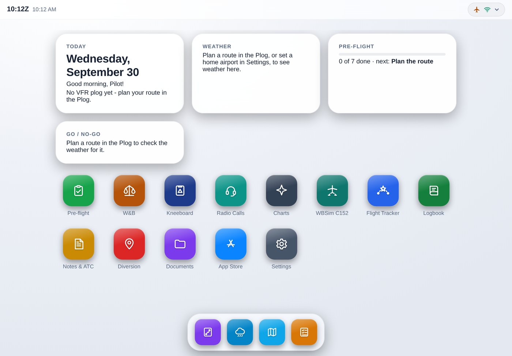
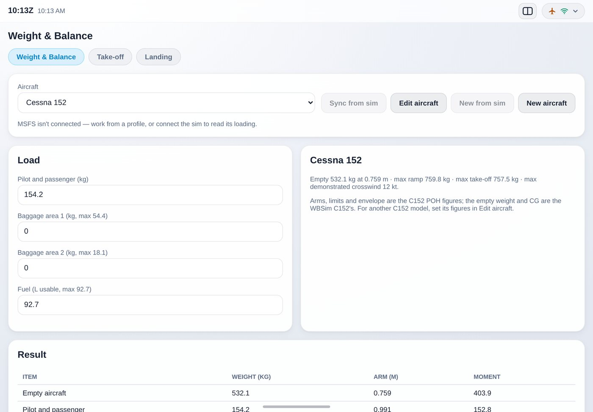
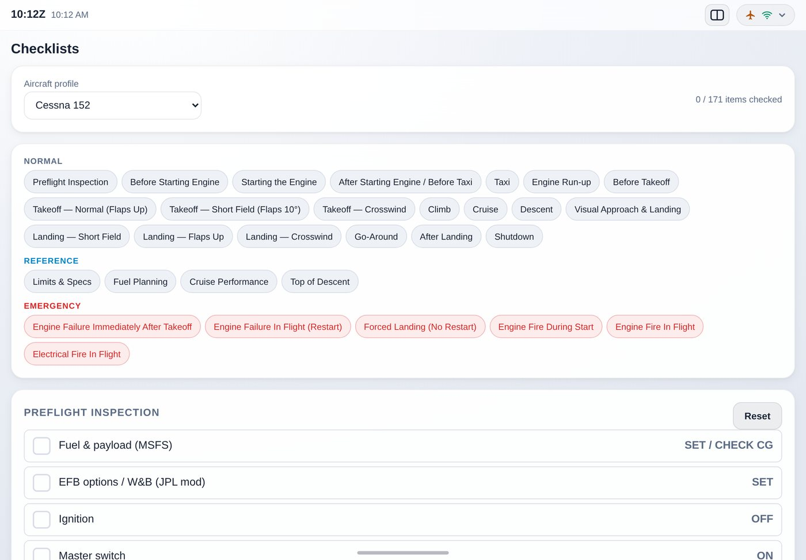

Your electronic flight bag
for MSFS 2024
Plan, brief and fly your sim flights from your iPad or iPhone. The GA-EFB app plans and briefs on its own, anywhere; add the free GA-EFB Connector on the PC you fly on, and it follows your flight live from Microsoft Flight Simulator.
iPad or iPhone · live data with Microsoft Flight Simulator 2024 on a Windows PC · For flight simulation only

Everything for a VFR flight
Made for general aviation in the sim, with UK flying in mind: kilograms, litres, feet and hectopascals, UK airspace and charts. Airliner tools are there too, if you want them.
VFR plog and route suggestions
Suggests a route round controlled airspace, danger areas and ATZs by reporting points, then works out headings, times and fuel with forecast winds. Imports Little Navmap and SkyDemon routes.
Weather and go/no-go
METARs and TAFs along your route, decoded and checked against your own limits for cloud, visibility and crosswind.
Weight and balance
For any aircraft, reading the loading straight from the sim, with take-off and landing distances. The Cessna 152 is built in, with its POH tables.
Checklists
Interactive normal and emergency checklists for the Cessna 152, Cessna 172S and Piper PA-28, opening the one for the aircraft you're flying.
Live from the sim
Your aircraft on the map, airspace warnings ahead of you, and the plog following you leg by leg with times and fuel against the plan.
Flight tracker and logbook
Every flight logged by itself like a paper logbook, with a landing report for every touchdown: rate, G, centreline and distance down the runway.
Charts and documents
Your own charts and PDFs, such as your aircraft's POH, always to hand and ready to draw on.
Airliner tools too
SimBrief briefings and GSX Pro ground services, when you fly something bigger: add them to your home screen from the Apps app.
The same on every device
Your logbook, notes, plogs and settings go with your GA-EFB account, so your iPad and iPhone show the same things.

Weight and balance in seconds
Pick the aircraft, or let GA-EFB read it from the sim, and see your take-off weight and centre of gravity against the envelope.
Take-off and landing tabs work out the distance you need for the runway, the surface and the weather.
Checklists that follow the flight
Tick your way through each phase, from the pre-flight inspection to shutdown, with the emergencies one tap away.
The EFB's home screen puts the right checklist, chart and weather in front of you for each phase of the flight.

How it works
The app does the planning on your iPad or iPhone. The free Connector on your PC adds the live data from the sim.
- Get the GA-EFB app from the App Store and create your free GA-EFB account in it. Your 7-day trial starts the first time you use it.
- Install the free GA-EFB Connector on the PC you fly on. No administrator password, and it starts with Windows from then on.
- Pair them once: press Pair in the Connector and scan its code in the app. Whenever MSFS is running, the app shows your aircraft, follows your plog and logs your flights.
- Enjoy it? Subscribe in the app, yearly or monthly, through the App Store. It unlocks on all your devices signed in to your account.
Simple pricing
Try everything free for 7 days, then choose a plan in the app. Prices include VAT where it applies.
- Try everything free for 7 days first, with nothing to pay
- All updates included, from the App Store
- Use it on all your own iPads and iPhones, with one account
- The GA-EFB Connector for live sim data is free
- Cancel any time in your Apple ID's subscriptions
Subscriptions are bought from Apple in the app, and renew automatically until you cancel. Apple looks after the payment, tax, receipts and refunds.
Questions
Setting up or stuck? See the user guide. Anything else, or an idea? See Support or email support@ga-efb.co.uk.
What do I need?
An iPad or iPhone and an email address for your free GA-EFB account. For the live data from the sim, a Windows 10 or 11 PC (64-bit) with Microsoft Flight Simulator 2024 running the free GA-EFB Connector, on the same Wi-Fi as your iPad or iPhone.
Do I need the PC to use it?
No. Planning, weather, NOTAMs, weight and balance, checklists, charts and your logbook all work on the iPad or iPhone by itself. The Connector adds what comes from the sim: your aircraft on the map, the plog and kneeboard following you, the flight tracker and landing reports.
Does it work with Microsoft Flight Simulator 2020?
GA-EFB is made and tested for MSFS 2024. Much of it doesn't need the sim at all, but the live features are only supported with MSFS 2024.
Is there an Android version?
Not yet: GA-EFB is an app for iPad and iPhone.
Do I need other subscriptions?
No. The optional airliner flight plans use SimBrief, with its own free account.
How many devices can I use it on?
All of your own iPads and iPhones. Your subscription is tied to your GA-EFB account, so sign in to it on each device.
What happens after the free trial?
After 7 days GA-EFB asks you to subscribe, yearly or monthly, in the app. Your logbook, plogs and settings from the trial are all kept.
How do I cancel?
In your Apple ID's subscriptions (Settings → your name → Subscriptions on the iPad or iPhone), or from GA-EFB's Settings → Subscription → Manage Subscription. GA-EFB carries on until the end of the period you've paid for.
I bought GA-EFB for £20 before
Thank you! Your licence is tied to your GA-EFB account, so sign in to the app with that account and it's unlocked, with nothing more to pay.
Can I get a refund?
Subscriptions are sold by Apple, so refunds are Apple's: see the refund policy.
Can I use it for real flying?
No. GA-EFB is for flight simulation only. Nothing in it is approved or kept up to date for real aviation.